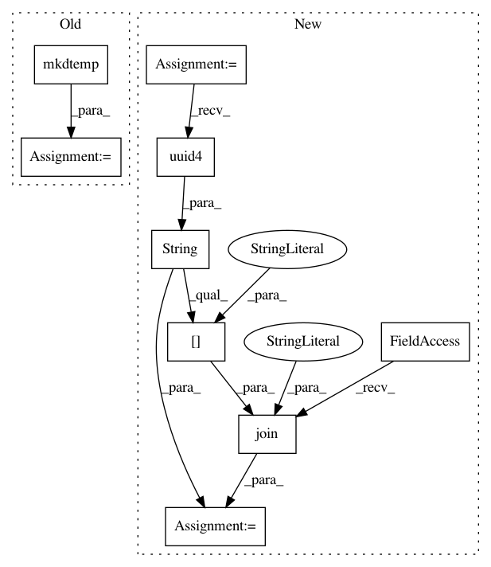

08ebd680e2a4dca6b00871e313a6a0fda8e6f618,mltsp/predict_class.py,,featurize_tsdata,#Any#Any#Any#Any#Any#Any#Any#,157
Before Change
sep = sepr = ","
all_features_list = cfg.features_list[:] + cfg.features_list_science[:]
tmp_dir_path = tempfile.mkdtemp()
if tarfile.is_tarfile(newpred_file_path):
if DISCO_INSTALLED and not in_docker_container:// //TEMP//
big_features_and_tsdata_dict = (
parallel_processing.featurize_prediction_data_in_parallel(
After Change
sep = sepr = ","
all_features_list = cfg.features_list[:] + cfg.features_list_science[:]
tmp_dir_path = os.path.join("/tmp", str(uuid.uuid4())[:10])
os.mkdir(tmp_dir_path)
if tarfile.is_tarfile(newpred_file_path):
if DISCO_INSTALLED:// and not in_docker_container:// //TEMP//
big_features_and_tsdata_dict = (
In pattern: SUPERPATTERN
Frequency: 3
Non-data size: 9
Instances
Project Name: cesium-ml/cesium
Commit Name: 08ebd680e2a4dca6b00871e313a6a0fda8e6f618
Time: 2015-05-06
Author: a.crellinquick@gmail.com
File Name: mltsp/predict_class.py
Class Name:
Method Name: featurize_tsdata
Project Name: cesium-ml/cesium
Commit Name: 08ebd680e2a4dca6b00871e313a6a0fda8e6f618
Time: 2015-05-06
Author: a.crellinquick@gmail.com
File Name: mltsp/custom_feature_tools.py
Class Name:
Method Name: make_tmp_dir
Project Name: cesium-ml/cesium
Commit Name: 9ca3f533cb6d467a1ebffda880137d3cc0ef9561
Time: 2015-05-13
Author: a.crellinquick@gmail.com
File Name: mltsp/tests/test_custom_feats.py
Class Name:
Method Name: test_extract_feats_in_docker_container